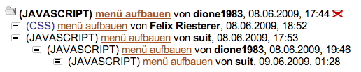
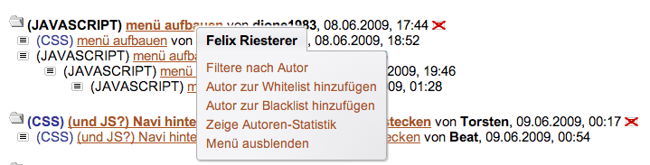
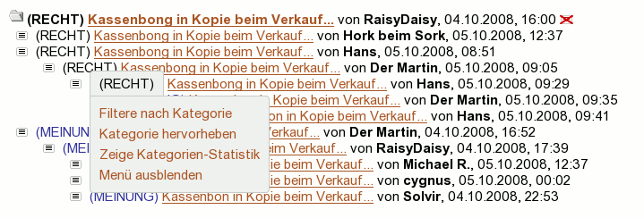
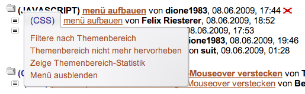
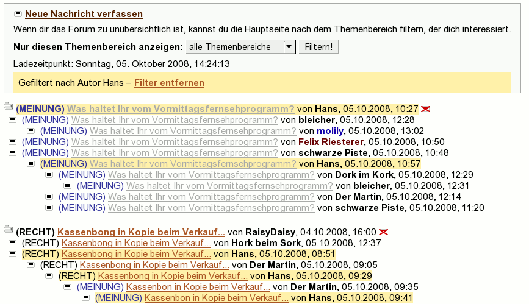
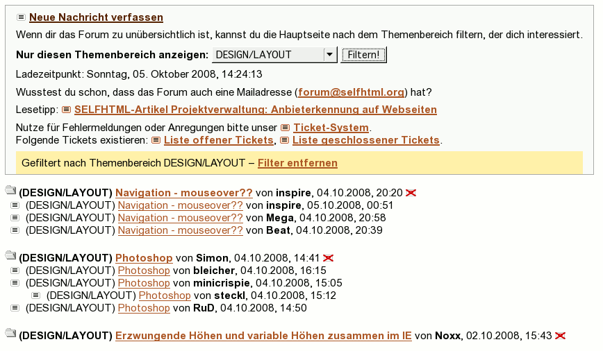
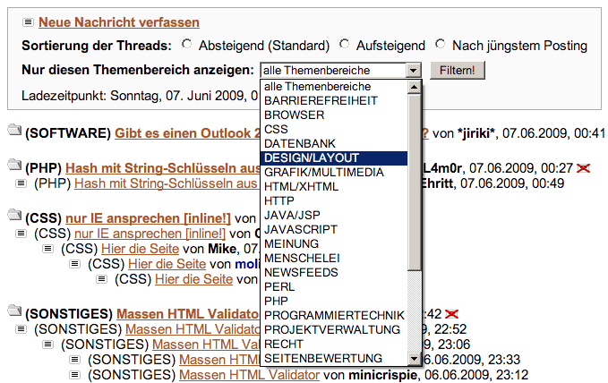
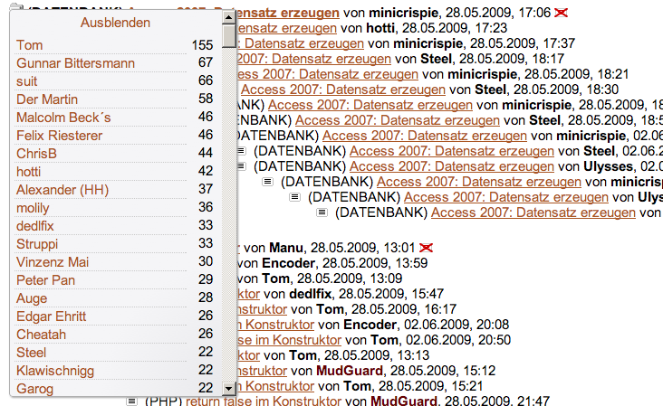
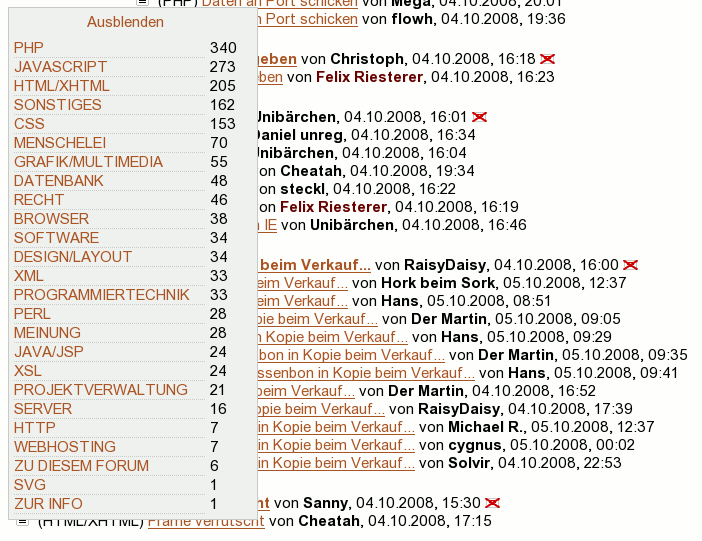
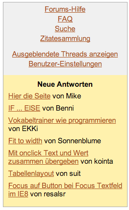

Das im Folgenden beschriebene Script fügt der benutzerspezifischen Ansicht (»my«) des SELFHTML-Forums einige nützliche clientseitige Funktionen hinzu. Darüber hinaus soll es ein ausbaubares Framework für weitere Funktionen darstellen.
Viele Ideen für stammen von Zapps Script Neue Funktionen für das SELFHTML-Forum. Vielen Dank an ihn!
Der Einfachheit halber wurden aktuelle JavaScript-Techniken verwendet:
Diese Techniken werden von allen zeitgemäßen JavaScript-Interpretern unterstützt. Das Script funktioniert daher in Gecko-, Webkit- oder Opera-basierten Browsern. Der Internet Explorer unterstützt keine der oben genannten Techniken. Es macht keinen Spaß und keinen Sinn, für all diese Techniken IE-Workarounds zu schreiben. Daher wird der IE nicht unterstützt. Auf diese Weise konnte das Script sehr geradlinig und performant entwickelt werden.
Das Script besteht aus einer JavaScript-Datei sowie einem Stylesheet, in dem alle Regeln zur Darstellung ausgelagert sind. Script und Stylesheet müssen in den Benutzer-Einstellungen unter Experten-Optionen eingebunden werden. Dazu werden die URIs wie folgt eingetragen:
* CSS
> Eigenes Stylesheet
> http://molily.de/selfhtml-forum-js/javascript.css
> [X] Ergänzt das Standard-Stylesheet
* Javascript
> Eigene JS-Datei
> http://molily.de/selfhtml-forum-js/forum.js
Damit das Scripts vollständig funktioniert, sind zudem folgende Einstellungen nötig:
* Threads und Postings
> Postings als gelesen markieren
> [X] Bereits besuchte Postings serverseitig als gelesen markieren
* Hervorhebung von Postings
> Hervorhebung eigener Postings
> [X] Eigene Postings hervorheben
Eine Angabe von Farben ist jeweils nicht unbedingt notwendig.
Alle Regeln für Darstellung sind in der besagten javascript.css untergebracht. Sie können sich das Script kopieren, z.B. die Größen und Farben anpassen, das angepasste Script irgendwo hochladen und dann deren URI angeben. Oder sie schreiben ein Stylesheet, dass javascript.css mit @import einbindet und gewisse Regeln überschreibt. Oder Sie binden javascript.css wie oben beschrieben in den Benutzereinstellungen ein und geben zusätzlich ein Inline-CSS mit überschreibenden Regeln ein (das Inline-CSS wird nach dem externen CSS eingebunden).
javascript.css wird bei mir (molily) in Zusammenhang mit einem allgemeinen Stylesheet für das Forum verwendet, das auf den folgenden Screenshots in Aktion zu sehen ist. Dies nimmt einige radikale Umformatierungen vor und blendet von mir nicht benötigte Elemente aus. Sie finden dieses Stylesheet unter http://molily.de/selfhtml-forum-js/forum.css, es bindet zu aller erst javascript.css ein.
Die normale Threadansicht sieht folgendermaßen aus:

Das Script bietet nun ein Kontextmenü an zwei Stellen. Darüber sind die meisten Funktionen zugänglich. Das Kontextmenü wird aktiviert durch einen Linksklick auf einen Autornamen bzw. auf einen Themenbereich-Namen.
Das Autoren-Kontextmenü:

Das Themenbereich-Kontextmenü:

Diese Kontextmenüs haben verschiedene Einträge, je nachdem, ob es sich um einen hervorgehobenen Themenbereich bzw. Autor handelt oder nicht oder ob man selbst der Autor ist. Ein Beispiel für einen hervorgehobenen Themenbereich:

Über entsprechende Links im Kontextmenü lässt sich die Forumshauptseite nach dem angeklickten Autoren bzw. Themenbereich filtern.
Eine Filterung nach Autor sieht folgendermaßen aus:

Die Postings des jeweiligen gesuchten Autors werden zur Zeit gelb markiert.
Filterung nach Themenbereich:

Wie man sieht erscheint oben im Header ein Info-Bereich mit einem Link, mit der sich der Filter wieder aufheben kann. Sie können aber auch einen anderen Filter über das Kontextmenü aktivieren, die alte Filterung wird dann aufgehoben und die neue angewendet.
Der browserseitige JavaScript-Filter kann auch über das Filter-Formular im Forumskopf bedient werden. Dieses funktioniert normalerweise ohne JavaScript. Das Script schaltet sich dort ein:

Das Absenden des Formulars führt zur Filter-Ansicht wie im vorigen Screenshot.
Über die entsprechenden Links im Kontextmenü wird eine Anfrage an den Server gesendet, sodass der angeklickte Autor bzw. Themenbereich zur Whitelist hinzugefügt wird. Nachdem die Änderung abgespeichert wurde, wird die Forumshauptseite neu geladen, sofern gewünscht.
In den obigen Screenshots sind Autoren auf der Whitelist dunkelrot, Themenbereiche auf der Whitelist blau hervorgehoben. (Und der eigene Autornname, in den Screenshots »molily«, ist blau hervorgehoben.) Diese Farben können selbstverständlich in der Benutzereinstellungen individuell angepasst werden.
Ein Ausblenden bestimmter Themenbereiche ist derzeit nicht möglich. Dies kann nur manuell über Benutzereinstellungen: Ausblenden von Postings bewerkstelligt werden. Das Ausblenden von Themenbereichen ist serverseitig nämlich als Whitelist gelöst. Wenn Sie eine Kategorie ausblenden wollen, müssen sie also alle anderen in der Liste »Nur Postings dieser Kategorien anzeigen« aktivieren!
Über das Kontextmenü kann eine Autoren- bzw. Themenbereich-Statistik eingeblendet werden. Diese erscheint als Layer auf der linken Seite und nimmt die Browserfenster-Höhe ein.
Autorenstatistik:

Themenbereich-Statistik:

Mit einem Klick auf die Autoren- bzw. Themenbereich-Namen kann die Forumshauptseite nach diesen gefiltert werden.
Im Forumskopf werden beim Laden alle noch ungelesenen Antworten auf eigene Beiträge aufgelistet. Dieser »Followup-Notice« sieht so etwa so aus:

Das Script führt einen globalen Namespace SELFHTML mit dem Unter-Namespace SELFHTML.Forum ein. Alle Funktionen sind darin gekapselt und auch neue Objekte sollten unter SELFHTML.Forum gespeichert werden. Bitte keine Funktionen außerhalb dieses Namensraumes, schon gar nicht direkt unter window.
In den Funktionen wird der Namensraum SELFHTML.Forum durch eine lokale Referenz namens F abgekürzt, sofern mehrere Zugriffe darauf erfolgen. Dies spart Unmengen an Tipparbeit.
Das Script besteht aus Modulen, die Initialisierungsfunktionen bereitstellen. Diese werden folgenermaßen registriert:
SELFHTML.Forum.addModule("all", SELFHTML.Forum.initBeispiel); // für Hauptseite und Posting-Ansicht
SELFHTML.Forum.addModule("hauptseite", SELFHTML.Forum.initBeispiel); // nur für Hauptseite
SELFHTML.Forum.addModule("nachricht", SELFHTML.Forum.initBeispiel); // nur für Posting-Ansicht
Diese Initialisierungsfunktionen werden ausgeführt, wenn das Ereignis DOMContentLoaded passiert, d.h. der DOM-Knotenbaum für den Scriptzugriff zur Verfügung steht.
Für die Filterung und die Statistik werden beim Start vier Indizes angelegt (siehe Funktion F.initCache):
F.postingsByAuthor = {}
F.threadStartsByAuthor = {}
F.ownPostings = []
F.postingsByCategory = {};
In zwei Objects werden die Posting nach Themenbereichen und Autornamen gespeichert. Unter F.postingsByAuthor["molily"] findet sich dann ein Array mit allen li-Elementobjekten der Postings, die »molily« verfasst hat. Dasselbe gilt z.B. für F.postingsByCategory["JAVASCRIPT"].
Unter F.threadStartsByAuthor finden sich alle Beiträge, die einen Thread eröffnet haben, nach Autornamen sortiert. Es handelt sich ebenfalls um Arrays mit li-Elementobjekten. F.ownPostings ist schließlich ein Array mit eigenen Postings, ebenfalls in Form von li-Elementen.
Alle Array-Objekte bekommen die JavaScript-1.6-Methode forEach zum einfachen Durchlaufen der Elemente. Die Methode nimmt eine Funktion entgegen, die für jedes Element ausgeführt wird. Auf konventionelle for-Schleifen wird daher verzichtet zugunsten dieser funktionalen Schreibweise.
Dasselbe gilt für Objects (Hashes). Diese werden nicht mit for-in durchlaufen, sondern mit der »statischen Klassenmethode« Object.forEach. (Object.prototype is verboten, deshalb ist diese Schreibweise nötig.) Diese Methode ist »sicher«, weil sie prototypisch vererbte Member überspringt. for-in-Schleifen kommen dadurch außerhalb dieser Helfermethode nicht vor.
Schließlich werden Elementknoten erweitert um die Methoden toggleClass, addClass, removeClass und hasClass. Deren Sinn erklärt sich von selbst, es ist ein komfortableres Interface zur className-Eigenschaft. Darüber hinaus bekommt jedes Element die Methode getNodesByXPath, mit der sich alle Kindknoten mithilfe einer XPath-Abfrage durchsuchen lassen, und die Methode contains, die zurückgibt, ob ein anderes Element in dem fraglichen enthalten ist.
Das Ansprechen und Einfügen von Elementen sowie das Ändern ihres Inhaltes erfolgt über eine OOP-Abstraktion namens Layer. F.Layer ist ein Konstruktor, der z.B. so aufgerufen wird:
new SELFHTML.Forum.Layer( { id : "scriptInfo", tagName : "div", parent : document.getElementById("kopf-haupt") } ).html(html).show();
Dies erzeugt ein Element vom angegebenen Typ mit der angegebenen ID und hängt es als angegebenen Eltern-Element ins Dokument ein. Wenn schon ein Layer mit der ID angelegt wurde, gibt der Konstruktor das entsprechende Layer-Objekt zurück, anstatt ein zweites gleiches Element zu erzeugen. Der obige Befehl kann also gefahrlos mehrfach aufgerufen werden.
Das Layer-Objekt hat die Methoden show, hide und html. Die ersten beiden erklären sich von selbst; mit .html("string") wird die innerHTML-Eigenschaft gesetzt. Die Methoden erlauben »Chaining«, wie man sieht, d.h. sie geben die Layer-Instanz wieder zurück.
Will man nur ein bestehendes Element verstecken oder seinen Inhalt ändern, so ruft man ebenfalls den Konstruktor auf, allerdings nur mit einer ID:
new SELFHTML.Forum.Layer( { id : "scriptInfo" } ).hide();
Wenn das Element nicht existiert, passiert einfach gar nichts.
Vorschläge für weitere Features, Anpassungen und Code-Ergänzungen werden gerne ins Script aufgenommen.
molily, molily@selfhtml.org